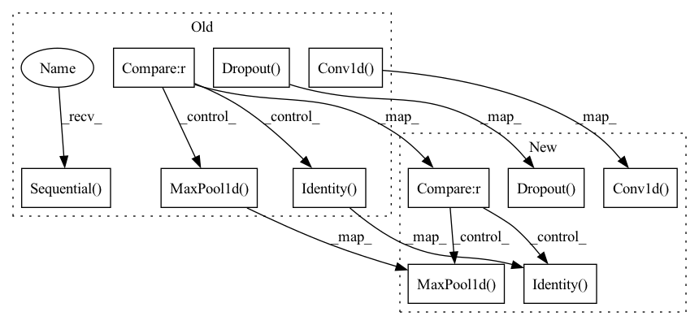

Pattern ID :1379

Before Change
l = []
for n_out, ksize, p in zip(num_filters, filter_size, pool_size):
l += [
nn.Conv1d(n_in, n_out, kernel_size=ksize, dilation=2**dilation, padding=2**dilation*(ksize//2)),
nn.MaxPool1d(p, stride=1, padding=p//2) if p > 1 else nn.Identity(),
nn.GroupNorm(1, n_out), // same as LayerNorm?
nn.CELU(),
nn.Dropout(p=dropout_rate) ]
n_in = n_out
self.net = nn.Sequential(*l)
def forward(self, x): // (B=1, 4, N)
return self.net(x)
After Change
for n_out, ksize, p in zip(num_filters, filter_size, pool_size):
self.net.append(
nn.Sequential(
nn.Conv1d(n_in, n_out, kernel_size=ksize, dilation=2**dilation, padding=2**dilation*(ksize//2)),
nn.MaxPool1d(p, stride=1, padding=p//2) if p > 1 else nn.Identity(),
nn.GroupNorm(1, n_out), // same as LayerNorm?
nn.CELU(),
nn.Dropout(p=dropout_rate) ) )
n_in = n_out
def forward(self, x): // (B=1, 4, N)
In pattern: SUPERPATTERN
Frequency: 4
Non-data size: 11
Instances
Fragment ID: 3570582
Project Name: mxfold/mxfold2
Commit Name: ebb758a037e14c87b2dadc3ad7dbac32f387a668
Time: 2019-12-03
Author: satoken@bio.keio.ac.jp
File Name: dnnfold/fold/layers.py
Class Name: CNNLayer
Method Name: __init__
Parent Class: nn.Module
Fragment ID: 3570580
Project Name: mxfold/mxfold2
Commit Name: 85cd9014362651673a8655ce72db7848577f3866
Time: 2019-11-29
Author: satoken@bio.keio.ac.jp
File Name: dnnfold/fold/layers.py
Class Name: CNNLayer
Method Name: __init__
Parent Class: nn.Module
Fragment ID: 3570579
Project Name: keio-bioinformatics/mxfold2
Commit Name: ebb758a037e14c87b2dadc3ad7dbac32f387a668
Time: 2019-12-03
Author: satoken@bio.keio.ac.jp
File Name: dnnfold/fold/layers.py
Class Name: CNNLayer
Method Name: __init__
Parent Class: nn.Module